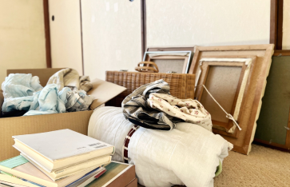
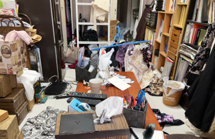

残置物の撤去とは？
どんなお部屋のタイプでも必ず解決します。
引越や住み替え、空き家の相続などの理由で、
住宅などに置いたままになってしまった不要な家財
（残置物）を撤去しなければならないけれど、
さまざまな理由で自分ではできないということもあります。
そういった方のために
代わりに残置物の撤去を行うことです。
ご相談・お見積り無料
土日祝日も対応可能
お問い合わせはお気軽に
受付時間 ; 10:00 ~ 19:00 定休日:
電話でのお問い合わせ
0495-71-7581
メールでのお問いあわせ

LINEからご相談
買取のご相談、お問い合わせはお気軽に
残置物撤去業者を利用するメリット

1．残置物撤去の実績がある
業者はその道の専門家ですので、 当然残置物撤去の経験・実績も豊富です。スムーズに・ 丁寧に残置物を撤去するノウハウに長けておりますので、 安心かつ、安全に残置物の撤去をお願いすることができます。
2．残置物の仕分けをする必要がない
一般廃棄物で「燃えるごみ」「燃えないごみ」「粗大ごみ」「資源ごみ」等に 分別するように産業廃棄物も「紙くず」「廃プラスチック類」「金属くず」等、 廃棄物の種類ごとに仕分けを致します。また、素材が複合されているものなど 分けることが困難な廃棄物は「混合廃棄物」として扱います。このような仕分け 作業では産業廃棄物業者様のように慣れている方は瞬時に見分ける事が出来ますが 慣れていない方は、かなりの時間と手間がかかる可能性があります。

3．時間を有効活用できる
残置物処分を業者に依頼して、節約できた時間を専門のリフォーム業務に活用する 事が出来ます。また「今は忙しく、残置物どころじゃない」 そのようなお悩みをお持ちの方もいらっしゃるかと思います。マイナスのカバーに労力を使うのではなく専門の得意分野に注力する事で、 自分の時間を有効に使うことができます。
店舗情報

- 〒367-0211
- 埼玉県本庄市児玉町吉田林392
- TEL:0495-71-7581
- 営業時間: 10:00~20:00
- 定休日: 毎週水曜日
- 中古品の販売買取ならリユースマーケットにおまかせ！